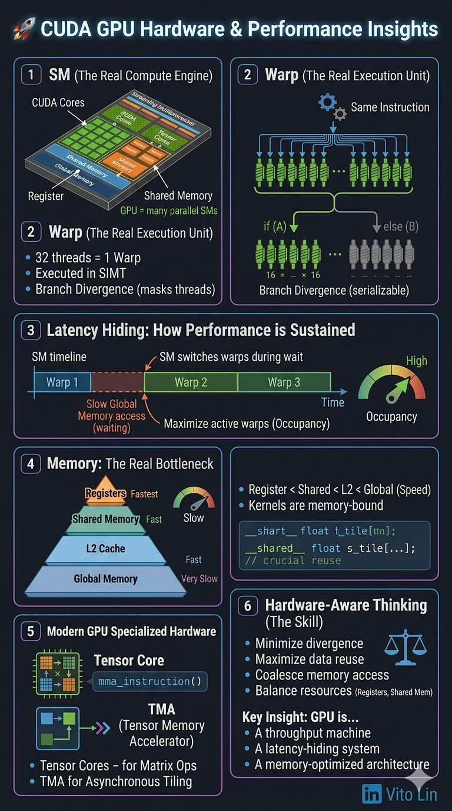

What GPU hardware really taught me
When I started learning CUDA, I always thought more threads lead to more performance. I was completely wrong.
GPU is not only about latency — it's more about throughput. A CPU tries to finish one task faster; a GPU tries to finish millions of tasks together.
SM — the real compute engine
Kernels run on SMs (Streaming Multiprocessors). Each SM is composed of CUDA cores, Tensor Cores, registers, and shared memory. A GPU is many SMs running in parallel.
Warp — the real unit of execution
32 threads make one warp, executed in SIMT. The GPU does not execute threads independently — all 32 threads in the same warp run the same instruction.
Branch divergence happens when a warp splits, and execution is serialized via thread masking:
Example
if (condition) { ... }
else { ... }Latency hiding, more than latency reduction
A CPU reduces latency; a GPU hides it. When one warp waits on a memory access, the SM switches to another warp instantly. Performance depends on having enough active warps to hide latency — this is occupancy.
Memory is the real bottleneck
The hierarchy, fastest to slowest: register → shared memory (on-chip) → L2 cache → global memory (very slow). Most CUDA kernels are memory-bound.
Modern GPUs are specialized hardware
A GPU is no longer just CUDA cores.
- Tensor Core — one instruction performs matrix multiply-accumulate on small tiles.
- TMA (Tensor Memory Accelerator) — moves data from global to shared memory asynchronously.
The real skill: hardware-aware thinking
- Minimize divergence
- Maximize data reuse
- Coalesce memory access
- Balance resources
Key insight
A GPU is a throughput machine, a latency-hiding system, and a memory-optimized architecture.
